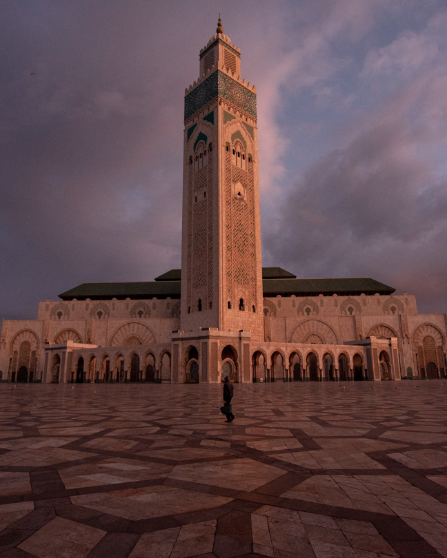
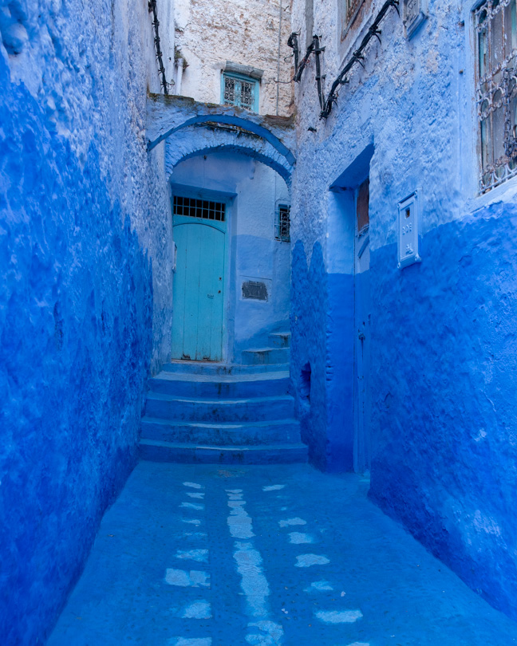
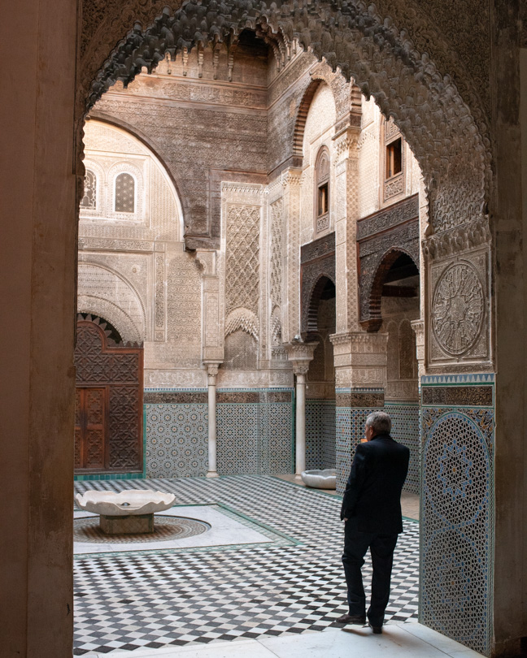
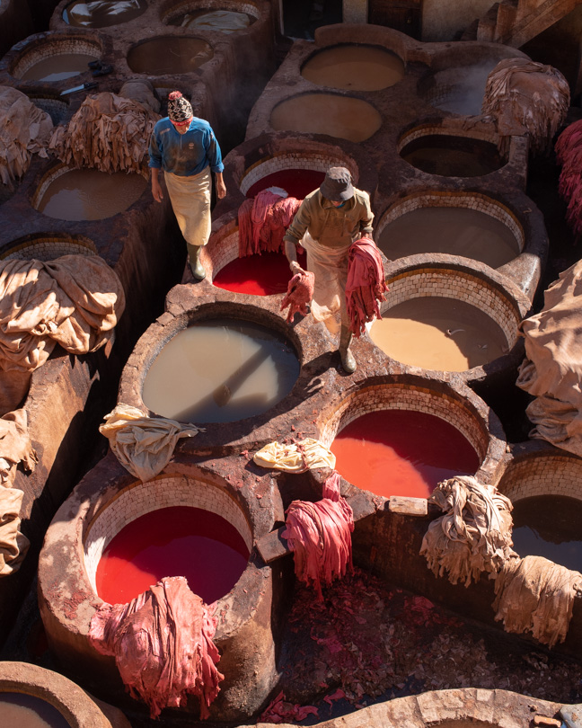
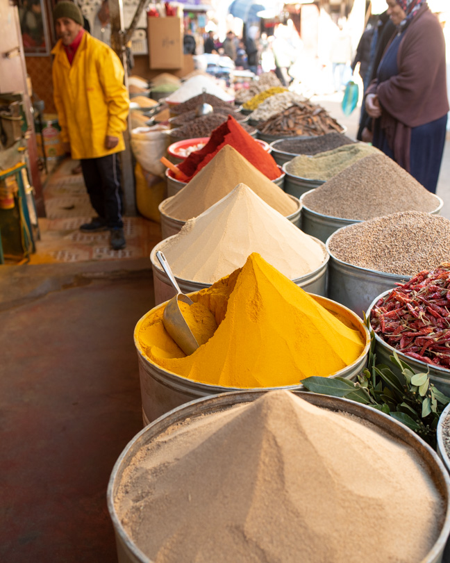
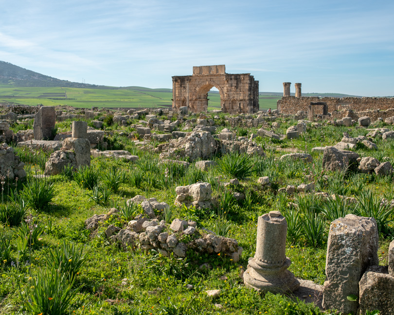
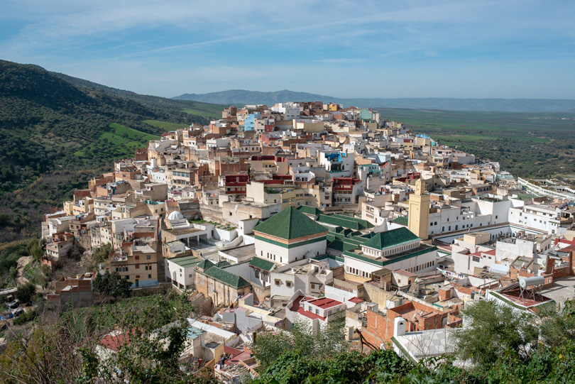
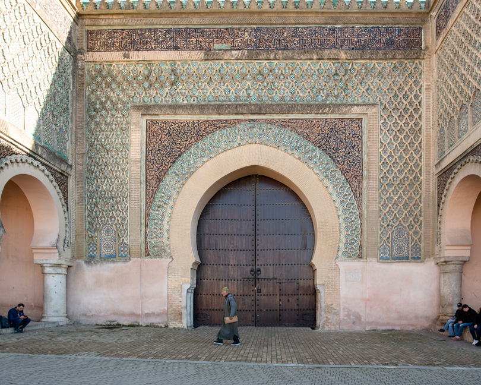
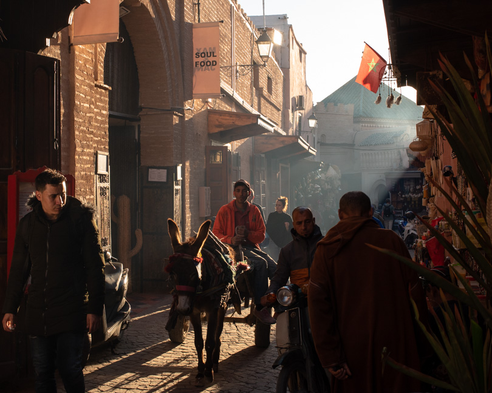
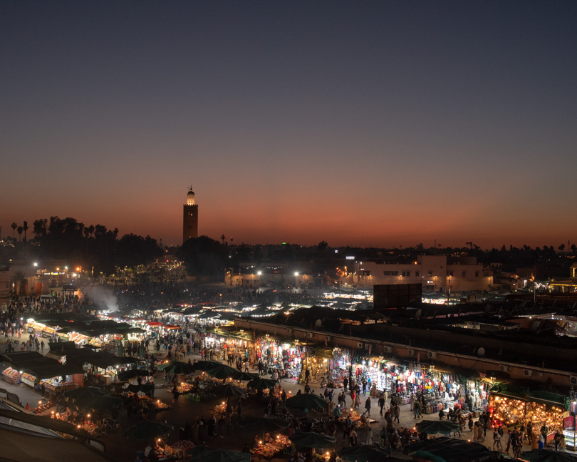

モロッコへの旅行はアフリカ大陸、アラブ圏への初めての旅行。なんとなく今までの旅とは違って緊張する。
旅行の計画をたて始めて分かったのは、見どころの間の距離が長く移動時間がかかること。飛行機での移動もあまり便利ではないようで、車か電車での移動が中心になる。見たいところはシャウエン、フェズ、砂漠、マラケシュの四ヶ所なのだが、一週間の予定では厳しそう。4ヶ所全部回るツアーに参加するという手もあったけど、駆け足になってしまうので、結局砂漠は今回諦めることにした。
通貨：ディルハム、1DH = 11円
 カサブランカ空港に到着したのは夜の8時半頃。パスポートコントロールを通過してカルーセルに到着したら誰もいない。不安になりながら待っていると30-40分ほどして人が集まってくる。結局、飛行機の到着から一時間ほどして荷物が出てきた。皆んな荷物が出てくるまで一時間ぐらいかかると知っていてお茶でもしていたのだろうか？それとも機内でできなかったお祈りをしに行っていたのだろうか？
カサブランカは一泊だけ。ハッサン・モスクを朝見てすぐ出発の予定だったのでホテルもモスクの近くにとった。誤算は8時出発の予定なのに、日の出は8時半。結局出発を8時半に変更してもらった。
夜明け前ライトアップされたモスクと、ライトアップが消されて日の出直前に色づき始めるモスクが美しかった。
 シャウエンはモロッコ北部リフ山の斜面にある町で15世紀にスペインから逃れてきたユダヤ人・アラブ人によって作られた。初めはアンダルシア風の白い町だったらしい。諸説あるが1930年頃からユダヤ人が神の色である青に家の壁を塗り始めたらしい。
メディナは山の斜面にあるので階段が多い。壁や階段が濃淡の青で塗られており、まさにおとぎの国の世界。インスタでよく見る壁と階段が濃い青に塗られ壁に植木鉢が飾ってある場所では沢山の人が撮影の順番を待ちしている。それ以外にも沢山の素敵なスポットがある。目抜き通りではお土産物屋などが沢山あるが、目抜き通りから少し離れて坂を登って行くと住宅地でいい雰囲気。夕方遅くなると観光客が減りめっきり静かになる。フェズから日帰りで訪れる人が多いからかもしれない。
スパニッシュ・モスクが町を見下ろす丘にあり、そこからの夕景と夜景の写真がすばらしく、行く気満々だったが、体調を崩してしまい行けなかった。旧市街が寒色に新市街は暖色の光に輝く夜景が見たかった。
フェズは８世紀末にイドリス朝の首都として建設された。イベリア半島のアンダルシア地方やチュニジアからの亡命者を受け入れ、文化的にも発展する。アンダルス・モスクやカラウィン・モスクはこれらの人たちのために建てられたモスクだそう。その後11-13世紀にかけてベルベル人のムラービト朝とムワッヒド朝の時代にはマラケシュに遷都されたが、マリーン朝の時代に再び首都となった。
 メディナは世界最大の規模を誇る。町の入口であるブー・ジュルード門からカラウィン・モスクまでは2本の目抜き通りが並行して走り、観光客向けの店が立ち並ぶ。この道は幅も広くまっすぐなので迷いようがないが、そこから一歩脇道に踏み入れると道は細く迷路のようにいりくんでおり、まさに迷宮。私達は着いた日にガイドに3時間ほどメディナを案内してもらったが、一度として同じ道を通らなかったという。それほどメディナの道は入り組んでいる。予めダウンロードしたグーグルマップがあっても細い道は地図に載っていなかったり、GPSの入りも悪く迷うこと必死。フェズを満喫するには思いっきり迷うべきだと思う。二日目は思いっきり道に迷いながらフェズの迷宮を体感することができた。
メディナでは様々な手工業が営まれており、職人たちは組合を結成し同業種の工房や店が一角に軒を並べている。なめし皮工場である巨大なタンネリがメディナの中心を流れるフェズ川のほとりにあり、その周囲には多数の革製品を製造する工房やそれを売る店が立ち並ぶ。また別の一角ではサボテンの繊維からできるシルクを染色・機織りする繊維業の工房や店が集まっているという具合。その他にフェズブルーで有名な陶器、金属細工、木工細工、アルガン・オイルやサボテン・オイル製造の工房などが集まっている地区がある。
ショワラ・タンネリという革なめし工場はその中でも特に有名で、フェズの有名な観光スポットでもある。川に向い坂を下っていくと臭いがしてくるのでタンネリに近づいていることが分かる。道に迷った素振りを見せるとすぐにタンネリまで案内しようかと地元の人が声をかけてくる。
 タンネリには直径1-2mぐらいの大きさのコンクリートでできた桶が二百個ほど並んでいて、それぞれが液体でみたされている。白色の桶は角ばった形をして、茶色の桶は丸い形をしている。動物の皮はまず白色の桶の中の液体に2-3日ほどつけられる。皮に残った余分な水分・脂肪・肉・毛などを取り除き、皮を柔らかくし染料が染み込みやすくするためらしい。白色の桶の液体は牛の尿、鳩の糞などが入っており、これが悪臭の原因らしい。皮はその後一旦乾かされ、残った毛はヘラのようなものでさらに除かれる。このなめしの工程を経て皮は革になる。なめされた革は染めの工程に入る。茶色のコンクリートでできた桶には様々な色の染料が入っていて、これらに数日つけて革は染められる。染料は全て天然のもので、たとえばポピーで赤、ヘンナで橙、インディゴで青、サフロンで黄色、杉で茶、ミントで緑という具合。染められた革は再び天日干しされてできあがり、工房に卸されることになる。なめしや染めの工程は全部手作業でかなりの重労働。
タンネリの見学には2つのルートがある。一般的な見学ルートはタンネリを囲むようにあるビルの最上階のテラスから見学する方法。ビルの前にガイドがいるのでお願いすると上に連れて行ってくれて工程を説明してくれる。見学が終わると同じビル内にある革製品屋に案内され、そこで買い物をしてもらうという仕組み。買い物しない場合にはガイドに10DH程のお金を払うことになる。私達が見学したときは夕方だったためタンネリで働いている人がいなかった。テラスは動ける範囲が限られるので好きな角度から写真を撮りにくいのも欠点。
もう一つの見学ルートは染料が入った桶がある工場内を案内してもらえる工場見学。ビルの前にいるガイドに工場の中に行きたいとお願いすることになる。私達は一人100DHとふっかけられたけど、友達が10DHで見せてもらったと言ったら、すんなりその値段で交渉成立。実際に染料が入った桶から革を出し入れしてるのを間近で見ることができる。なんなら桶の縁を歩くことも可能だが、桶の中の液体のことを知ったらその勇気はでない。その他に皮から毛を抜いている様子や革を干している場所にも行ける。少し勇気がいるけど工場見学が断然おすすめ。冬だったのでまだましだったけど、臭いはテラスからの比ではない。ツアー内容に満足したので結局二人で50DH支払った。
 食料品市場は地元の人でいつも賑わっている。肉屋では大きな肉塊が店先にぶら下がっていて看板代わりになっている。鶏肉屋では生きた鶏がかごの中にたくさんいる。買った人は鶏をそのままぶら下げて持って帰っていた。 海からはそれほど近くないが魚屋もたくさんあった。一日で売り切りなのだろうか、肉屋でも魚屋でも商品は冷蔵庫や氷で冷やしていなかった。パン屋はパンを売るのではなく、パンを焼くサービスを提供するらしい。地域で窯を共有しており、各家庭が自分のパン生地を持ち込み、パン焼き職人が窯で焼いて各家庭に返すという仕組みらしい。パン生地には家庭ごとに違う印がつけてあるのでどの家庭のパンかすぐ分かるとのこと。香辛料のお店では色とりどりの香辛料が円錐形に小高く積まれている。ナッツや乾燥果物のお店も多くあった。ちなみにアラブ人とベルベル人用の市場が別々にあるもよう。
メディナの中にはいくつもの美しい建造物が点在している。メディナの正門とも言えるブー・ジュルード門には表側が青、裏側が緑の幾何学模様のタイルが施されている。ブー・イナニア・マドラサとアッタリーン・マドラサはイスラム教の神学校で、イスラム教徒以外の人にも公開されている数少ない建物。いずれも14世紀に作られたもので繊細な彫刻やタイルのモザイクは美しく必見。ムーレイ・イドリス廟はイドリス朝のイドリス二世の霊廟。中には入れないが、入り口から中を覗くことができる。カラウィン・モスクとアンダルース・モスクはともに9世紀に建てられたモスクで、それぞれがフェズ川をはさんで立っている。王宮はメディナから数キロ離れたところにあるマリーン朝時代のもの。中には入れないが、金色に輝く門が美しい。マリーン朝の墓地はフェズのメディナを見下ろす小高い丘の上にあり、夕日のスポットとして有名。町は徐々に暗くなる中ミナレットだけが夕日に照らされる瞬間が美しかった。
 ヴォルビリスはローマ帝国の支配圏の西端に位置する都市として栄え、最盛期には３万人の人口があったらしい。フェズの西65キロ、メクネスの北30キロのところにあるので、フェズからメクネスに行く途中に寄ってもらった。フォーラム、神殿、浴場、凱旋門などが良い保存状態で残っている。 邸宅の跡地には多くのモザイクがある。モザイクの周りにはさすがにロープがあり入れないようになっているが、それ以外の建造物の多くは中に入れたり、段を登れるようになっている。数十年前はローマのフォロ・ロマーノもこんな感じだったのだろうか。
 ムーレイ・イドリスには、8世紀末にモロッコ最初のイスラム王朝イドリス朝を築いたイドリス一世の霊廟があり、モロッコ人にとって重要な巡礼地である。フェズに遷都されるまでヴォルビリス、ムーレイ・イドリスがイドリス朝の首都であった。霊廟やモスクはイスラム教徒以外は入れないが、丘の上から町を眺める景色が素晴らしいので寄ってみた。ヴォルビリスから数キロのところにあるので、ガイドには前もって連れて行ってほしいと伝えてあった。彼はこの町を谷越に見える所に連れてきてそのままメクネスに行こうとする。聞くと彼はムーレイ・イドリスの町の中は案内ができないらしい。結局車で町中まで行ってもらったが、そこで別のガイドを雇って見晴台まで連れて行ってもらうことになった。見晴台まではかなり道が込み入っていると聞いていたので時間の節約のために。見晴台からの景色は素晴らしく、わざわざ寄ってもらった甲斐があった。町の壁はいたるところが緑に塗られていて美しい。緑はイスラム教で聖なる色らしい。たしかにイスラム教の国の国旗は緑色が基調なものが多いし、モスクの屋根も緑のものが多い。
 メクネスは17世紀アラウィー朝のムーレイ・イスマイルの時代に首都となった。メディナや王宮は高い城壁に囲まれている。マンスール門はこの町のメイン・ゲートで、その規模もだが繊細な彫刻やモザイクで飾られた美しさも圧巻。マンスール門の前にあるエディム広場はマラケシュのフナ広場みたいな大きさで沢山の出店があるが、観光客も少なく呼び込みもほとんどいないのでゆったりしている。
ブー・イナニア・マドラサは14世紀マリーン朝時代に作られた神学校でメディナの中心部にある。フェズにある同名のマドラサよりやや小さいが、人は少なくゆったり楽しめた。クミス門は中心部からやや離れて、昔のユダヤ人街の先にある門。マンスール門に比べて小さく、やや地味だが一見の価値あり。ムーレイ・イスマイル廟は改装中で入れず。
レストランはトリップアドバイザーで評価が高かったYa Halaというメディナ内にあるお店に行った。入り口は大きな看板もなく民家のドアのよう。ドアは閉じていて営業しているのかもわからない。ダメ元でノックしたらすぐにドアを開けてくれた。まさかそんなシステム！と驚いた。トリップアドバイザーのステッカーがなければ気付かなかったかも。民家の一階がレストランになっている。席に着くと、料理は一から作るので最低40分はかかりますと言われる。作り置きしていそうな前菜（ナスのサラダ、これがまた最高に美味しかった）さえも40分かかった。料理を待つ間、ミントティーをサービスしてくれる。モロッコ料理はどこでも美味しいが、ここの食事がこの旅行中で一番美味しかった。
メクネスやヴォルビリスのあたりはフェズのあたりより湿潤なようで、緑も多くオレンジやオリーブの木も多い。メクネス地方はワインの産地としても有名。ローマ時代にはヴォルビリスでワインが作られていたようだが、イスラム教支配下で中止されていた。その後フランスの植民地時代にワイン生産が再開され、現在では観光客や輸出用に生産されている。ワインの産地とくれば料理は美味しいと決まっている。他のレストランも試してみたかった。
 マラケシュはベルベル語で神の国という意味で、11-13世紀にかけてベルベル人の王朝ムラービト朝とムワッヒド朝の時代に首都となった。アトラス山脈の麓に広がるオアシスを中心に広がった町で、雪を冠したアトラス山脈から50キロほどの距離にある。カサブランカから電車で南下すると雨季にもかかわらず、緑が徐々に少なくなり赤茶けた土が多くなり、モロッコ北部に比べて雨がだいぶ少ないことが感じられる。建物も赤茶けた色のものが多くなる。マラケシュは別名red cityとかpink cityと呼ばれるのがよく分かる。
マラケシュはモロッコで一番観光客が多い町で、どこに行っても活気に満ちあふれている。その中でも一番エネルギッシュなのがジャマ・エル・フナ広場。広大な広場に昼間はたくさんのオレンジ・ジュースの屋台が立ち並び、蛇使いをはじめ大道芸人もたくさんいる。日が暮れるとタジンやケバブなどの食事を出す屋台が立ち並び一層活気がます。冷やかしで屋台をウロウロしていると何回も呼び込みに捕まりそうになる。
 フナ広場の周りには沢山のカフェやレストランがあり、夕日が沈む頃の屋上からの眺めは最高。Le Grand Balcon du Café GlacierとCafé de Franceというカフェが有名でこの時間帯には観光客で賑わっている。どちらも飲み物一杯でこの景色が楽しめる。Café Glacierは屋台が近くで広場を広く写せるのがいい。Café de Franceは夕日が落ちる方向と屋台、遠景のクトゥービヤのミナレットが重なるのがいい。どちらかというとCafé de Franceのほうがゆったりしていておすすめ。
フナ広場の北側は買い物ゾーンが広がっている。ここでも同じ業種のお店がまとまっている。絨毯のスーク、かご屋さんのスーク、革製品のスーク、スパイスのスーク、バブーシュのスークという具合などなど。フェズと比べるとスークの商品はカラフルで洗練された雰囲気がある。観光客向けの商品が多いだけかもしれないが。そして、フェズほど道も込み入ってなくわかりやすい。メディナの中は車が入れないところがほとんどだが、マラケシュのスークではバイクが一部許されていて結構なスピードで走るバイクとすれ違う。
メディナの中にはいくつの見どころが点在している。12世紀のムワッヒド朝の時代に建てられたクトゥービヤ・モスクのミナレットは70mの高さがありメディナのシンボル的存在。フナ広場から見るライトアップされた塔は格別。アグノー門も同時代に造られた巨大な門。装飾にはコーランの一節が刻まれて、精緻な装飾が美しい。ベン・ユーセフ・マドラサは16世紀に建てられた神学校。残念ながら改装中で入れず。その他サアード朝の墳墓群やバヒア宮殿がみどころ。
メゾン・ド・ラ・フォトグラフィはリアドを改装した写真美術館。19世紀から20世紀半ばにかけてのモロッコのポートレートや風景写真が展示してあり、その頃のモロッコの生活様式がよくわかり面白い。屋上テラスのカフェからはメディナ越しにアトラス山脈が一望できる。ミントティーでも飲みながら観光の合間にゆっくりするのに最適。
マジョレル庭園は新市街にある庭園。マジョレル・ブルーと呼ばれる深いコバルトブルーが使われた建物が鮮やか。イヴ・サンローランが晩年を過ごしたと庭園としても知られている。
モロッコでポートレートのような写真を取る場合には許可をよるのが無難。カメラを構えて目配せすると、大抵の人は手でだめと意思表示してくれる。
フェズやマラケシュのメディナでは必ず道に迷う。グーグルマップを予めダウンロードしておいて、オフラインで使えるようにしおくと便利。地元の人が”案内するよ”と近づいてくるが、必要ないならはっきりと断るべき。あとでガイド料を請求されるらしい。また”この先行き止まりだよ”と何回も言われたが、大抵の場合は大丈夫。夜遅くレストランから帰るときに道案内が必要かと言われが、断ったのは後悔した。お酒を飲んでいたこともあり、少し嫌な目に合った。
モロッコのスークでは買い物の際、値切り交渉をすることが文化。旅行者と見ると相当な値段をふっかけてくる。あらかじめブログなどで商品の相場を調べてはいたが、その値段まで下げるのはなかなか根気がいる。マラケシュでの買い物の際、さぁ値段交渉となり、私は200DH、お店の人は450DHから始まり、せめて400DH、と、なかなか歩み寄れない。それならもういいと背を向けると”300DHから370DHまでの間でのラストプライスはいくら？”と言われ、迷わず301DHと答えると、”You are a Berber man（ベルベル人やな〜）"と言われた。”なかなかやるなぁ”的な感じで褒められてると勝手に思ってたけど、でも実際はちょっと違うのかも。
ベルベル人はアフリカ大陸の先住民で放牧民が多いということは知っていたが、帰って調べてみたら、ベルベル人のネーミングは古代ギリシャ語の”バルバロイ（ギリシャ語を話さない人たち≒蛮族）”からきており、古代ローマ人、後にはアラブ人が蔑視を込めてそう呼ぶようになったという。ということは、”言葉が通じない（マトモじゃない！）”って意味だったのだろうか？
砂漠方面に行けば、ベルベル人の街などが点在し、砂漠で観光業を営んでいるのもほとんどベルベル人なのだそう。次にモロッコを訪れる時には砂漠へ行ってベルベル人についてもっと知りたいと思う。
- 一日目: ヨーロッパの経由地からカサブランカに夜到着。
- 二日目: カサブランカからシャウエンへ：車、8時半〜15時。
- 三日目: シャウエンからフェズへ：車、10時〜15時
- 四日目: フェズ
- 五日目: フェズからヴォルビリス、ムーレイ・イドリスに寄りメクネスへ：車、9時〜14時
- 六日目: メクネスからマラケシュへ：電車、7時〜13時
- 七日目: マラケシュ
- 八日目: マラケシュから夕方ヨーロッパの経由地へ
 カサブランカ〜シャウエン〜フェズ〜メクネスの移動はそれぞれのホテルに前もって車を手配してもらった。参考までに、カサブランカ〜シャウエン: 2,500DH、 シャウエン〜フェズ: 1,100DH、フェズ〜メクネス: 1,000DH
カサブランカ〜シャウエン〜フェズ〜メクネスの移動はそれぞれのホテルに前もって車を手配してもらった。参考までに、カサブランカ〜シャウエン: 2,500DH、 シャウエン〜フェズ: 1,100DH、フェズ〜メクネス: 1,000DH
メクネス〜マラケシュは電車で移動。213DH x 2。予約はネットで可能（フランス語のみ）。
カサブランカからラバトまでは海沿いの高速道路で快適だが、それ以外は一般道での移動になる。特にシャウエンはかなり山奥で道も狭くなり距離の割に時間がかかる。途中小さな町で賑わっているマーケットの中の人混みを分けて車で通るという場面もあり、止めてもらって散策するべきだったと後悔。
モロッコの北部は雨季には雨量が十分あるようで一面緑で美しい。もっと赤茶けたら乾燥した風景を想像していたので嬉しい誤算。カサブランカからマラケシュにかけては北部に比べるとだいぶ乾燥している。
旅行に行ったのは一月だったのだが、誤算は日の出が8:30ぐらいと遅いこと。日の入りも7:00ごろだった。ヨーロッパと時差がないように時間設定しているためのよう。朝少し散策してから出発するよう旅程を組んでいたところでは変更を余儀なくされた。冬に個人で旅程組む場合は注意が必要。